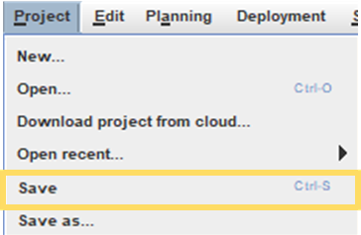
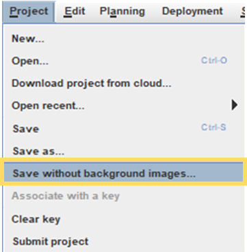

Save Project
While working on the project file, it's good practice to save your edits regularly.
By default, the QSP will automatically save the project every 30 minutes (to change
the default setting, see the Edit Auto-Backup Settings section), but it's good practice to save the
project after any major edits to make sure they are not lost if something unexpected
happens, e.g. your computer freezes. This topic will walk you through how to save
your project file.
Saving the Project File
To save the project file, follow the steps below.
- Open the project in the QSP.
- Make some edits to the project, e.g. add new Locators or other project objects.
- In the menu bar at the top, open the Project menu and
select Save.

Tip: Alternatively you can use the shortcut ctrl + S. For more handy shortcuts, please see Useful Keyboard Shortcuts in the Getting Started section. -
If you have not previously saved the project file, select where you would like to save the file before clicking the Save button in the window that opens.
Saving the Project File Without the Background Images
In some cases, you may want to save your project file without the background images that you have used as a visual reference to create the project plan. To do so, follow the steps below.
- Open the project in the QSP.
- Make some edits to the project, e.g. add new Locators or other project objects.
- In the menu bar at the top, open the Project menu and
select Save without background images.

-
If you have not previously saved the project file, select where you would like to save the file before clicking the Save button in the window that opens.